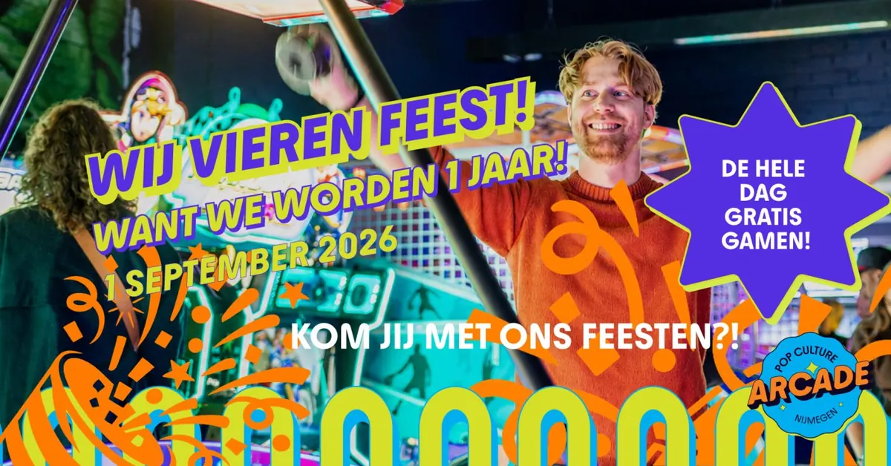
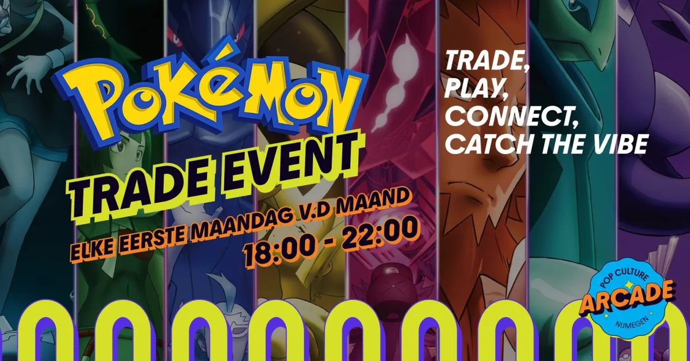

Evenementen bij Pop Culture Arcade
Van Welderenstraat 80, Nijmegen, Gelderland 6511MR, Nederland
Binnenkort

Eerder bij Pop Culture Arcade
7sep Pokémon trade night bij Pop Culture Arcade7 sep 2026Pop Culture Arcade
1sepPump It Up Toernooi – the arcade dance battle18 aug 2026Pop Culture Arcade
8augArcade van de maand, Kun jij Perry Ubeda verslaan?8 aug 2026Pop Culture Arcade
3aug
Pokémon trade night bij Pop Culture Arcade7 sep 2026Pop Culture Arcade
1sepPump It Up Toernooi – the arcade dance battle18 aug 2026Pop Culture Arcade
8augArcade van de maand, Kun jij Perry Ubeda verslaan?8 aug 2026Pop Culture Arcade
3aug
Pokémon trade night bij Pop Culture Arcade7 sep 2026Pop Culture Arcade
1sep
Pop Culture Arcade’s eerste verjaardag!1 sep 2026Pop Culture Arcade 18augPump It Up Toernooi – the arcade dance battle18 aug 2026Pop Culture Arcade
8augArcade van de maand, Kun jij Perry Ubeda verslaan?8 aug 2026Pop Culture Arcade
3aug
Pokémon Trade-Night bij Pop Culture Arcade nijmegen3 aug 2026Pop Culture Arcade